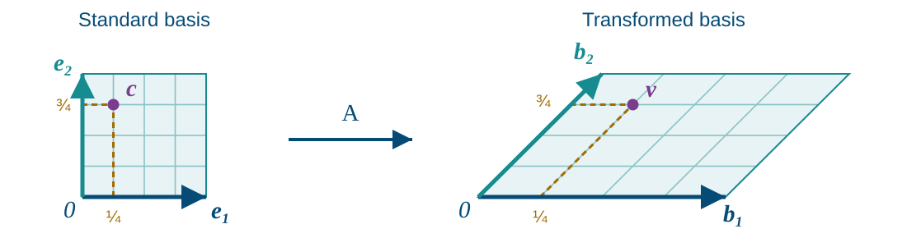
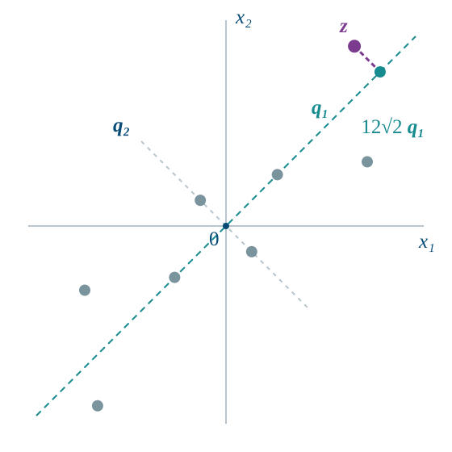

Bases, Dimension,
and Coordinates
Anton, Rorres, & Kaul §§4.4–4.7
Assignment 4 due October 23
Test 2 · Oct 29
October 20, 2026
Basis (coordinates use the listed order): \(\mathcal{B}=\{1,t,t^2\}\)
Which vectors can we build, and how can we describe each one uniquely?
Motivation preview: the definitions and proofs follow
Choose vectors \(\vct{b}_1,\ldots,\vct{b}_k\) in a space \(V\)
| Concept | Notation | What it does |
|---|---|---|
| Linear combination | \(c_1\vct{b}_1+\cdots+c_k\vct{b}_k\) | Builds many new vectors |
| Span | \(\operatorname{span}\{\vct{b}_1,\ldots,\vct{b}_k\}\) | Collects all vectors we can build |
| Linear independence | \(c_1\vct{b}_1+\cdots+c_k\vct{b}_k=\vct{0}\) \(\implies c_1=\cdots=c_k=0\) |
Makes the formula for building unique |
| Basis | \(\mathcal{B}=\{\vct{b}_1,\ldots,\vct{b}_k\}\) | Builds every vector in \(V\) uniquely, via linear combinations |
| Coordinates | \([\vct{v}]_{\mathcal{B}}=[c_1,\ldots,c_k]^\top\) | Records the weights as an address |
Spanning gives existence; independence gives uniqueness
An invertible map transforms the standard basis into a new basis
\[\begin{gather*} \mat{A}=\begin{bmatrix}2&1\\0&1\end{bmatrix},\qquad \vct{b}_1=\mat{A}\vct{e}_1=\begin{bmatrix}2\\0\end{bmatrix},\qquad \vct{b}_2=\mat{A}\vct{e}_2=\begin{bmatrix}1\\1\end{bmatrix} \end{gather*}\]

\[ \vct{c}=\begin{bmatrix}1/4\\3/4\end{bmatrix} \quad\longmapsto\quad \vct{v}=\mat{A}\vct{c}=\tfrac14\vct{b}_1+\tfrac34\vct{b}_2 =\begin{bmatrix}5/4\\3/4\end{bmatrix} \]
Keep \(\vct{b}_1=[2,0]^\top\) and \(\vct{b}_2=[1,1]^\top\)
For the ordered basis \(\mathcal{B}=\{\vct{b}_1,\vct{b}_2\}\),
\[ \vct{v}=\begin{bmatrix}5/4\\3/4\end{bmatrix} \quad\text{has coordinates}\quad [\vct{v}]_{\mathcal{B}}=\begin{bmatrix}1/4\\3/4\end{bmatrix} \]
\(\exstar\) Add \(\vct{b}_3=\vct{b}_1+\vct{b}_2\) Does the span grow? Find two different lists in \(\vct{b}_3=c_1\vct{b}_1+c_2\vct{b}_2+c_3\vct{b}_3\); zero coefficients are allowed
Differentiation is a linear transformation \(D:\mathbb{P}_3\to\mathbb{P}_2\), \(D(p)=p'\)
\[ \text{Input basis: }\mathcal{B}=\{1,t,t^2,t^3\},\qquad \text{output basis: }\mathcal{C}=\{1,t,t^2\} \]
For \(p(t)=2-3t+5t^2+4t^3\), transform its coordinates:
\[ \underbrace{\begin{bmatrix}0&1&0&0\\0&0&2&0\\0&0&0&3\end{bmatrix}}_{\mat{M}} \underbrace{\begin{bmatrix}2\\-3\\5\\4\end{bmatrix}}_{[p]_{\mathcal{B}}} =\underbrace{\begin{bmatrix}-3\\10\\12\end{bmatrix}}_{[D(p)]_{\mathcal{C}}} \]
Reconstruct only when needed: \(D(p)(t)=-3+10t+12t^2\)
For a linear map \(T\) and fixed ordered bases: \([T(\vct{v})]_{\mathcal{C}}=\mat{M}[\vct{v}]_{\mathcal{B}}\)
Build \(\mat{M}\) once; compute with coordinates — Matrix Spaces and Rank
\(\mat{A}\in\reals^{m\times n}\): \(m\) observations, \(n\) feature columns \(\vct{A}_1,\ldots,\vct{A}_n\); \(\vct{b}\in\reals^m\): observed responses
\[ \widehat{\vct{b}}=\mat{A}\widehat{\vct{x}} =\widehat{x}_1\vct{A}_1+\cdots+\widehat{x}_n\vct{A}_n \]
The closest fitted vector is unique; its coefficients are unique exactly when the columns are independent
Fit a line \(b\approx x_1+x_2t\) to \((t,b)=(0,1),(1,0),(2,2)\)
\[ \mat{A}=\begin{bmatrix}1&0\\1&1\\1&2\end{bmatrix},\qquad \vct{b}=\begin{bmatrix}1\\0\\2\end{bmatrix},\qquad \widehat{\vct{x}}=\begin{bmatrix}1/2\\1/2\end{bmatrix} \]
\[ \widehat{\vct{b}}=\tfrac12\begin{bmatrix}1\\1\\1\end{bmatrix} +\tfrac12\begin{bmatrix}0\\1\\2\end{bmatrix} =\begin{bmatrix}1/2\\1\\3/2\end{bmatrix},\qquad \vct{b}-\widehat{\vct{b}}=\begin{bmatrix}1/2\\-1\\1/2\end{bmatrix} \]
The independent feature columns span a plane in \(\reals^3\)
The residual is perpendicular to both columns: this is the closest fit
\([1/2,1/2]^\top\) locates the fitted response in that plane; it does not represent the observed response outside the plane
Principal component analysis (PCA): center the data, then choose orthogonal unit directions with the greatest remaining variation

\[ \vct{q}_1=\frac1{\sqrt2}\begin{bmatrix}1\\1\end{bmatrix},\qquad \vct{q}_2=\frac1{\sqrt2}\begin{bmatrix}-1\\1\end{bmatrix} \]
In this basis, one centered observation is
\[ \vct{z}=3\vct{q}_1+\tfrac12\vct{q}_2 \]
Its coordinate vector \([3,1/2]^\top\) contains its scores
Full basis: exact coordinates
Keep \(\vct{q}_1\): \(\vct{z}\approx3\vct{q}_1\) in its span
Vectors \(\vct{v}_1,\ldots,\vct{v}_k\) are linearly independent when
\[ c_1\vct{v}_1+\cdots+c_k\vct{v}_k=\vct{0} \]
forces
\[ c_1=\cdots=c_k=0 \]
They are linearly dependent when some nonzero coefficient vector produces the zero vector
Independence means no generator can be synthesized from the others
Are \(1\) and \(e^{2\pi\sqrt{-1}\,t}\) independent over \(\mathbb{C}\) on \([0,1]\)?
Suppose \(a+be^{2\pi\sqrt{-1}\,t}=0\) for every \(t\in[0,1]\)
\[ \begin{array}{rcl} t=0&:&a+b=0\\ t=\tfrac12&:&a-b=0 \end{array} \quad\implies\quad a=b=0 \]
Only the trivial combination gives the zero function, so the two modes are independent
\(\exstar\) Are \(e^{2\pi\sqrt{-1}\,t}\) and \(e^{-2\pi\sqrt{-1}\,t}\) linearly independent over \(\mathbb{C}\) on \([0,1]\)? Set their linear combination equal to zero for every \(t\); evaluate at \(t=0\) and \(t=\tfrac14\) Repeat for \(1\) and \(e^{4\pi\sqrt{-1}\,t}\), choosing two useful values of \(t\)
For coordinate vectors, place the candidates into columns:
\[ \mat{V}= \begin{bmatrix} \vct{v}_1&\cdots&\vct{v}_k \end{bmatrix} \]
Then
\[ c_1\vct{v}_1+\cdots+c_k\vct{v}_k=\vct{0} \quad\Longleftrightarrow\quad \mat{V}\vct{c}=\vct{0} \]
Only \(\vct{c}=\vct{0}\) solves this system exactly when every column has a pivot
The familiar homogeneous system answers the abstract independence question
Take \(\vct{u}_1=[1,1,0]^\top\), \(\vct{u}_2=[1,0,1]^\top\), and \(\vct{u}_3=[2,1,1]^\top\)
\(\exstar\) Place the vectors in columns and solve \(\mat{U}\vct{c}=\vct{0}\) Are these three vectors independent? Give a nonzero coefficient list if they are dependent Which vector can you remove without changing their span? Replace \(\vct{u}_3\) by \([2,1,2]^\top\) and test independence again
Suppose
\[ c_1\vct{v}_1+\cdots+c_k\vct{v}_k=\vct{0} \]
and \(c_j\ne0\). Then
\[ \vct{v}_j =-\sum_{i\ne j}\frac{c_i}{c_j}\vct{v}_i \]
Removing \(\vct{v}_j\) does not change the span
A dependence relation is a certificate of redundancy
A finite set
\[ \mathcal{B}=\{\vct{b}_1,\ldots,\vct{b}_n\} \]
is a basis for \(V\) when
For coordinates, use the basis vectors in the order listed
Spanning guarantees existence of coefficients
Independence guarantees uniqueness of coefficients
Every vector has one coefficient list in a chosen ordered basis
Let \(\mathcal{B}=\{\vct{b}_1,\ldots,\vct{b}_n\}\) span \(V\) and be independent
Spanning supplies coefficients; suppose one vector has two coefficient lists
\[ \vct{v}=\sum_{j=1}^n c_j\vct{b}_j =\sum_{j=1}^n d_j\vct{b}_j \]
Subtract the two representations
\[ \sum_{j=1}^n(c_j-d_j)\vct{b}_j=\vct{0} \quad\implies\quad c_j-d_j=0\quad\text{for every }j \]
Linear independence forces the two coefficient lists to agree
A space can have many bases
Coordinates are unique once the ordered basis is fixed
The retained vectors must span the same space and be independent
For vectors in \(\reals^m\):
Row operations preserve dependence relations among columns but change the columns themselves
Use the reduced matrix to locate pivots; take the basis vectors from the original matrix
Let \(W\) be the span of the columns of \(\mat{V}\)
\[ \mat{V}=[\vct{v}_1\ \vct{v}_2\ \vct{v}_3\ \vct{v}_4] =\begin{bmatrix}1&2&0&1\\0&0&1&1\\1&2&1&2\end{bmatrix} \;\xrightarrow{R_3\leftarrow R_3-R_1-R_2}\; \begin{bmatrix}1&2&0&1\\0&0&1&1\\0&0&0&0\end{bmatrix} \]
The first and third columns are pivot columns
\[ \vct{v}_4=\vct{v}_1+\vct{v}_3, \qquad \vct{v}_2=2\vct{v}_1 \]
Remove \(\vct{v}_4\) and \(\vct{v}_2\) without changing the span
\[ W=\operatorname{span}\{\vct{v}_1,\vct{v}_2,\vct{v}_3,\vct{v}_4\} =\operatorname{span}\{\vct{v}_1,\vct{v}_3\} \]
\(\mathcal{B}=\{\vct{v}_1,\vct{v}_3\}\) still spans \(W\)
\(a\vct{v}_1+b\vct{v}_3=\vct{0}\) forces \(a=b=0\): independence completes the basis proof
Use the preceding generators of the plane \(W=\{[x,y,z]^\top:z=x+y\}\)
\[ \vct{v}_1=\begin{bmatrix}1\\0\\1\end{bmatrix},\quad \vct{v}_2=\begin{bmatrix}2\\0\\2\end{bmatrix},\quad \vct{v}_3=\begin{bmatrix}0\\1\\1\end{bmatrix},\quad \vct{v}_4=\begin{bmatrix}1\\1\\2\end{bmatrix} \]
\(\exstar\) A basis must span \(W\) and be independent Show that \(\{\vct{v}_3,\vct{v}_4\}\) is another basis for \(W\) Explain why \(\{\vct{v}_1,\vct{v}_2\}\) is not a basis for \(W\)
For a subspace of \(\reals^n\), a finite spanning list is a frame
Independence is optional; for \(W=\{[x,y,z]^\top:z=x+y\}\), use
\[ \vct{v}_1=[1,0,1]^\top,\quad \vct{v}_2=2\vct{v}_1, \quad \vct{v}_3=[0,1,1]^\top,\quad \vct{v}_4=\vct{v}_1+\vct{v}_3 \]
\[ \vct{v}_4 =0\vct{v}_1+0\vct{v}_2+0\vct{v}_3+1\vct{v}_4 =1\vct{v}_1+0\vct{v}_2+1\vct{v}_3+0\vct{v}_4 \]
A redundant frame admits more than one coefficient list for the same vector
Here any one of the four vectors can be lost without losing the span
An algebraic (Hamel) basis uses only finite linear combinations
Algebraic bases give exact finite representations
Countable orthonormal bases in \(L^2[a,b]\) allow infinite expansions
A basis \(\mathcal{B}=\{\vct{b}_1,\ldots,\vct{b}_n\}\) spans \(V\) and is independent
For \(\vct{v}\in V\), spanning gives existence and independence gives uniqueness:
\[ \vct{v}=c_1\vct{b}_1+\cdots+c_n\vct{b}_n \]
The coordinate vector of \(\vct{v}\) relative to \(\mathcal{B}\) is
\[ [\vct{v}]_{\mathcal{B}} =\begin{bmatrix}c_1\\\vdots\\c_n\end{bmatrix} \]
For coordinates, the listed order matters: entry \(j\) multiplies \(\vct{b}_j\)
In \(\reals^2\), the standard basis is
\[ \mathcal{E}=\left\{\vct{e}_1=\begin{bmatrix}1\\0\end{bmatrix}, \vct{e}_2=\begin{bmatrix}0\\1\end{bmatrix}\right\} \]
Writing \(\vct{x}=\begin{bmatrix}5\\1\end{bmatrix}\) has meant
\[ \vct{x}=5\vct{e}_1+1\vct{e}_2, \qquad [\vct{x}]_{\mathcal{E}}=\begin{bmatrix}5\\1\end{bmatrix} \]
In \(\reals^n\), use \(\mathcal{E}=\{\vct{e}_1,\ldots,\vct{e}_n\}\), where \(\vct{e}_j\) has a 1 in entry \(j\) and zeros elsewhere
Our familiar vector column is its coordinate vector in the standard basis
For \(\vct{x}=[5,1]^\top\), compare the standard basis \(\mathcal{E}=\{[1,0]^\top,[0,1]^\top\}\) with
\[ \mathcal{B}=\left\{\vct{b}_1=\begin{bmatrix}1\\1\end{bmatrix}, \vct{b}_2=\begin{bmatrix}1\\-1\end{bmatrix}\right\} \]
The same vector has two descriptions:
\[ \vct{x}=5\vct{e}_1+1\vct{e}_2=3\vct{b}_1+2\vct{b}_2 \]
\[ [\vct{x}]_{\mathcal{E}}=\begin{bmatrix}5\\1\end{bmatrix}, \qquad [\vct{x}]_{\mathcal{B}}=\begin{bmatrix}3\\2\end{bmatrix} \]
The brackets mean “coordinates of this vector in this basis”
The entries 3 and 2 are weights on \(\vct{b}_1\) and \(\vct{b}_2\), not the standard horizontal and vertical components
The vector stays at \((5,1)\); changing the basis changes its description
Use \(\mathcal{E}=\{[1,0]^\top,[0,1]^\top\}\) and \(\mathcal{B}=\{[1,1]^\top,[1,-1]^\top\}\)
\(\exstar\) Interpret each coordinate column If \([\vct{u}]_{\mathcal{B}}=[1,0]^\top\), find \(\vct{u}\) in standard coordinates If \([\vct{v}]_{\mathcal{E}}=[1,0]^\top\), find \(\vct{v}\). Is it the same vector as \(\vct{u}\)? Reverse the listed order of \(\mathcal{B}\) to get \(\mathcal{B}'\). Find \([\vct{x}]_{\mathcal{B}'}\) for \(\vct{x}=[5,1]^\top\)
For the standard polynomial basis
\[ \mathcal{E}=\{1,t,t^2\} \]
the polynomial \(p(t)=2-3t+5t^2\) has coordinates
\[ [p]_{\mathcal{E}} =\begin{bmatrix}2\\-3\\5\end{bmatrix} \]
For another basis, the same polynomial has another coordinate vector
Choosing a basis converts abstract vectors into coordinate columns
High school algebra in \(\mathbb{P}_1\): polynomials of degree at most one
Slope-intercept form
\[ p(x)=b+mx \]
Basis \(\mathcal{B}=\{1,x\}\), in that order
\[ [p]_{\mathcal{B}}=\begin{bmatrix}b\\m\end{bmatrix} \]
Coordinates: intercept and slope
Two-point form at \(x=0,1\)
\[ p(x)=y_0(1-x)+y_1x \]
Basis \(\mathcal{C}=\{1-x,x\}\), in that order
\[ [p]_{\mathcal{C}}=\begin{bmatrix}y_0\\y_1\end{bmatrix} \]
Coordinates: \(y_0=p(0)\) and \(y_1=p(1)\)
For \(p(x)=2+3x=2(1-x)+5x\),
\[ [p]_{\mathcal{B}}=\begin{bmatrix}2\\3\end{bmatrix}, \qquad [p]_{\mathcal{C}}=\begin{bmatrix}2\\5\end{bmatrix} \]
Same line, different coordinates in different bases
Add the point at \(x=2\) to the two-point description
\[ p(2)=y_0(1-2)+2y_1=2y_1-y_0 \]
For \(p(x)=2+3x\), the three points are \((0,2)\), \((1,5)\), and \((2,8)\)
Three sampled values of a line cannot vary independently
There is no basis of three polynomials in \(\mathbb{P}_1\)
Extend the two-point basis to the spanning family \(\mathcal{G}=\{1-x,x,1\}\)
It is dependent because
\[ (1-x)+x-1=0 \]
The same line has infinitely many representations, one for each \(s\in\reals\):
\[ 2+3x=(2-s)(1-x)+(5-s)x+s(1) \]
For example,
\[ 2(1-x)+5x+0(1)=1(1-x)+4x+1(1) \]
A basis gives unique coordinates; redundant generators give nonunique weights
Use \(\mathcal{B}=\{1,x\}\) and \(\mathcal{C}=\{1-x,x\}\), in the listed order
\(\exstar\) A polynomial \(p\in\mathbb{P}_1\) satisfies \(p(0)=3\) and \(p(1)=-1\) Find \([p]_{\mathcal{C}}\), reconstruct \(p(x)\), and find \([p]_{\mathcal{B}}\) Predict \(p(2)\); could the point \((2,-4)\) lie on this same line? Find two different coefficient lists for \(p\) in the redundant family \(\{1-x,x,1\}\)
For real symmetric \(2\times2\) matrices (\(\mat{A}^\top=\mat{A}\)), use
\[ \mat{B}_1=\begin{bmatrix}1&0\\0&0\end{bmatrix}, \quad \mat{B}_2=\begin{bmatrix}0&1\\1&0\end{bmatrix}, \quad \mat{B}_3=\begin{bmatrix}0&0\\0&1\end{bmatrix} \]
Every symmetric matrix has exactly one representation
\[ \begin{bmatrix}a&b\\b&d\end{bmatrix} =a\mat{B}_1+b\mat{B}_2+d\mat{B}_3 \]
Thus \(\mathcal{B}=\{\mat{B}_1,\mat{B}_2,\mat{B}_3\}\) spans the space and is independent
\[ \mat{A}=\begin{bmatrix}2&-1\\-1&3\end{bmatrix} \quad\implies\quad [\mat{A}]_{\mathcal{B}}=\begin{bmatrix}2\\-1\\3\end{bmatrix} \]
The vector is a matrix; its coordinate vector is a column of coefficients
\(\exstar\) For real \(2\times2\) matrices, build bases from the freely chosen entries Find an ordered basis for all upper-triangular \(2\times2\) matrices In your basis, find the coordinates of \(\begin{bmatrix}2&-1\\0&3\end{bmatrix}\) Find a basis for the skew-symmetric matrices: \(\mat{A}^\top=-\mat{A}\) Explain why your lists both span and are independent
In \(\mathbb{P}_2\), the polynomials in \(t\) of degree at most two, take \(\mathcal{E}=\{1,t,1+t^2\}\)
Its coefficient columns relative to \(\{1,t,t^2\}\) form
\[ \begin{bmatrix}1&0&1\\0&1&0\\0&0&1\end{bmatrix} \]
Three pivots: every coefficient vector is reached uniquely, so \(\mathcal{E}\) spans \(\mathbb{P}_2\) and is independent
For \(p(t)=2+4t+3t^2\),
\[ p=-1(1)+4t+3(1+t^2), \qquad [p]_{\mathcal{E}}=[-1,4,3]^\top \]
In \(\mathbb{P}_2\), consider
\[ \mathcal{B}=\{1+t,\ t+t^2,\ 1+t^2\} \]
\(\exstar\) Does \(\mathcal{B}\) span all of \(\mathbb{P}_2\) and is it independent? Form the matrix of coefficients relative to \(\{1,t,t^2\}\) Test its columns for independence If it is a basis, find \([2+4t]_{\mathcal{B}}\)
In \(\mathbb{P}_2\), consider
\[ \mathcal{C}=\{1+t,\ t+t^2,\ 1+2t+t^2\}, \qquad \mathcal{D}=\{1+t,\ t+t^2,\ 1\} \]
\(\exstar\) Use spanning and independence to decide which list is a basis of \(\mathbb{P}_2\) For the basis, find the coordinates of \(2+4t\)
A space is finite-dimensional if it has a finite basis
Every basis then has the same number of vectors, the dimension:
\[ \dim(V)=n \]
Over \(\reals\): columns, one-variable polynomials of degree at most \(k\), and matrices
\[ \dim(\reals^n)=n, \qquad \dim(\mathbb{P}_k)=k+1, \qquad \dim(\reals^{m\times n})=mn \]
Our earlier \(U=\{p\in\mathbb{P}_3:p(0)=0\}\) has basis \(\{t,t^2,t^3\}\), so \(\dim(U)=3\)
The zero space has the empty basis, so \(\dim(\{\vct{0}\})=0\)
Dimension counts independent directions, not the number of vectors in the space
Suppose \(\dim(V)=n\) and a list contains exactly \(n\) vectors in \(V\)
Then either one of these facts proves the other:
\[ \text{linearly independent} \quad\Longleftrightarrow\quad \text{spans }V \]
More generally,
Knowing the dimension can cut a basis proof in half
Since \(\dim(\mathbb{P}_3)=4\):
\(\exstar\) What can the dimension alone tell you? Can three polynomials span \(\mathbb{P}_3\)? Can five polynomials be linearly independent in \(\mathbb{P}_3\)? If four polynomials are independent, what else follows?
The same set \(\mathbb{C}\) can be viewed as two different vector spaces
| Scalars | A basis | Dimension |
|---|---|---|
| \(\mathbb{C}\) | \(\{1\}\) | \(\dim_{\mathbb{C}}(\mathbb{C})=1\) |
| \(\reals\) | \(\{1,\sqrt{-1}\}\) | \(\dim_{\reals}(\mathbb{C})=2\) |
Over \(\mathbb{C}\), any \(z\) is the scalar multiple \(z\cdot1\)
Over \(\reals\), write \(z=a+b\sqrt{-1}\) with two real coefficients
\(\exstar\) Find the dimensions of \(\mathbb{C}^2\) over \(\mathbb{C}\) and over \(\reals\)
In \(\mathbb{P}_2(\reals^2)\), total degree is at most two: add the \(x\) and \(y\) exponents
\[ \underbrace{1}_{0}, \qquad \underbrace{x,\ y}_{1}, \qquad \underbrace{x^2,\ xy,\ y^2}_{2} \]
Every polynomial in the space is a unique linear combination of these six monomials
They form a basis, so
\[ \dim(\mathbb{P}_2(\reals^2))=1+2+3=6 \]
Count freely chosen coefficients after identifying a basis
\(\exstar\) Find a basis and count its vectors; total degree adds the \(x\) and \(y\) exponents \(\mathbb{P}_3(\reals^2)\): list monomials by total degree All upper-triangular \(3\times3\) matrices All symmetric \(3\times3\) matrices Could five symmetric \(3\times3\) matrices span their entire space?
For a basis \(\mathcal{B}\) of an \(n\)-dimensional real vector space, define
\[ \vct{v}\longmapsto[\vct{v}]_{\mathcal{B}}\in\reals^n \]
The column \([\vct{v}]_{\mathcal{B}}\) lists coefficients in this ordered basis, so
\[ [c\vct{u}+d\vct{v}]_{\mathcal{B}} =c[\vct{u}]_{\mathcal{B}}+d[\vct{v}]_{\mathcal{B}} \]
The coordinate map is one-to-one, onto, and preserves linear combinations
Such a map is a linear isomorphism
It preserves linear combinations; ordinary coordinate lengths may change
Every \(n\)-dimensional real vector space has the same linear structure as \(\reals^n\)
Use the polynomial basis \(\mathcal{B}=\{1,1+t,t^2\}\)
\[ p=2+3t+t^2, \quad [p]_{\mathcal{B}}=[-1,3,1]^\top \]
\[ q=1-t+2t^2, \quad [q]_{\mathcal{B}}=[2,-1,2]^\top \]
Compute in coordinates:
\[ [2p-q]_{\mathcal{B}} =2[-1,3,1]^\top-[2,-1,2]^\top =[-4,7,0]^\top \]
Reconstruct: \(-4(1)+7(1+t)+0t^2=3+7t=2p-q\)
Coordinate arithmetic uses coefficients in the chosen basis
Keep \(\mathcal{B}=\{1,1+t,t^2\}\) and suppose
\[ [p]_{\mathcal{B}}=[1,2,-1]^\top, \qquad [q]_{\mathcal{B}}=[-2,1,3]^\top \]
\(\exstar\) Coordinate entries multiply \(1\), \(1+t\), and \(t^2\) in that order Find \([p+2q]_{\mathcal{B}}\) without first expanding the polynomials Reconstruct \(p+2q\) as a polynomial in \(t\) Why is its constant coefficient different from the first coordinate?
In \(\reals^2\), use \(\mathcal{B}=\{[1,1]^\top,[1,-1]^\top\}\)
\(\exstar\) Separate linear structure from geometry Suppose \([\vct{u}]_{\mathcal{B}}=[1,0]^\top\) and \([\vct{v}]_{\mathcal{B}}=[0,1]^\top\). Find \([2\vct{u}-\vct{v}]_{\mathcal{B}}\) and reconstruct \(2\vct{u}-\vct{v}\) Compare the Euclidean lengths of \(\vct{u}\) and \([\vct{u}]_{\mathcal{B}}\) Why does preserving linear combinations not guarantee preserving lengths?
The companion notebook explores basis extraction and coordinate changes
For a basis \(\mathcal{B}=\{\vct{b}_1,\ldots,\vct{b}_n\}\) of \(\reals^n\), form
\[ \mat{P}_{\mathcal{B}} =\begin{bmatrix}\vct{b}_1&\cdots&\vct{b}_n\end{bmatrix} \]
The column \([\vct{x}]_{\mathcal{B}}\) lists coefficients multiplying these basis vectors
Independence makes \(\mat{P}_{\mathcal{B}}\) invertible:
\[ \vct{x}=\mat{P}_{\mathcal{B}}[\vct{x}]_{\mathcal{B}}, \qquad [\vct{x}]_{\mathcal{B}}=\mat{P}_{\mathcal{B}}^{-1}\vct{x} \]
The columns of a basis matrix tell what the new coordinate axes mean in standard coordinates
Let \(\mathcal{B}\) and \(\mathcal{C}\) be ordered bases of \(\reals^n\)
\(\mat{P}_{\mathcal{B}}\) and \(\mat{P}_{\mathcal{C}}\) contain their basis vectors as columns
\[ \vct{x}=\mat{P}_{\mathcal{B}}[\vct{x}]_{\mathcal{B}} =\mat{P}_{\mathcal{C}}[\vct{x}]_{\mathcal{C}} \]
To obtain \(\mathcal{C}\)-coordinates, multiply by \(\mat{P}_{\mathcal{C}}^{-1}\):
\[ [\vct{x}]_{\mathcal{C}} =\underbrace{\mat{P}_{\mathcal{C}}^{-1}\mat{P}_{\mathcal{B}}}_{ \text{transition from }\mathcal{B}\text{ to }\mathcal{C}} [\vct{x}]_{\mathcal{B}} \]
Changing coordinates changes the description, not the vector
Let \(\mathcal{B}=\{\vct{b}_1,\ldots,\vct{b}_n\}\) and \(\mathcal{C}\) be ordered bases of the same finite-dimensional real vector space
\[ \mat{Q}_{\mathcal{C}\leftarrow\mathcal{B}} =\begin{bmatrix}[\vct{b}_1]_{\mathcal{C}}&\cdots&[\vct{b}_n]_{\mathcal{C}}\end{bmatrix} \]
Column \([\vct{b}_j]_{\mathcal{C}}\) lists the coefficients that rebuild \(\vct{b}_j\) from \(\mathcal{C}\)
\[ [\vct{v}]_{\mathcal{C}} =\mat{Q}_{\mathcal{C}\leftarrow\mathcal{B}}[\vct{v}]_{\mathcal{B}} \]
For bases of \(\reals^n\), this is \(\mat{P}_{\mathcal{C}}^{-1}\mat{P}_{\mathcal{B}}\)
The arrow records the direction: input coordinates in \(\mathcal{B}\), output coordinates in \(\mathcal{C}\)
In \(\mathbb{P}_2\), choose
\[ \mathcal{B}=\{1,1+t,t^2\},\qquad \mathcal{C}=\{1,t,t+t^2\} \]
Columns give \(\mathcal{C}\)-coefficients of the \(\mathcal{B}\) polynomials; use \(t^2=(t+t^2)-t\):
\[ \mat{Q}_{\mathcal{C}\leftarrow\mathcal{B}} =\begin{bmatrix}1&1&0\\0&1&-1\\0&0&1\end{bmatrix} \]
For \(p=2-3t+5t^2\),
\[ [p]_{\mathcal{B}}=\begin{bmatrix}5\\-3\\5\end{bmatrix} \quad\xrightarrow{\mat{Q}_{\mathcal{C}\leftarrow\mathcal{B}}}\quad [p]_{\mathcal{C}}=\begin{bmatrix}2\\-8\\5\end{bmatrix} \]
\(2(1)-8t+5(t+t^2)=p\): new coordinates, same polynomial
Keep \(\vct{x}=[5,1]^\top\) and compare
\[ \mathcal{C}=\bigl\{[1,0]^\top,[1,1]^\top\bigr\}, \qquad \mathcal{D}=\bigl\{[2,1]^\top,[1,1]^\top\bigr\} \]
\(\exstar\) Find \([\vct{x}]_{\mathcal{C}}\) and \([\vct{x}]_{\mathcal{D}}\) Reconstruct \(\vct{x}\) from each coordinate vector Use basis vectors as columns of \(\mat{P}_{\mathcal{C}}\) and \(\mat{P}_{\mathcal{D}}\); check the change from \(\mathcal{C}\) to \(\mathcal{D}\) with \(\mat{P}_{\mathcal{D}}^{-1}\mat{P}_{\mathcal{C}}\)
In \(\mathbb{P}_1\), use \(\mathcal{B}=\{1,t\}\) and \(\mathcal{C}=\{1-t,t\}\)
\(\exstar\) Convert \(\mathcal{B}\)-coordinates to \(\mathcal{C}\)-coordinates Find \([1]_{\mathcal{C}}\) and \([t]_{\mathcal{C}}\); use them as columns of \(\mat{Q}_{\mathcal{C}\leftarrow\mathcal{B}}\) For \(p(t)=3-2t\), find \([p]_{\mathcal{C}}\) by matrix multiplication and reconstruct \(p\) Would the same matrix convert \(\mathcal{C}\)-coordinates back to \(\mathcal{B}\)-coordinates? Find the reverse matrix
Let \(T:V\to W\) be linear, with ordered bases \(\mathcal{B}=\{\vct{b}_1,\ldots,\vct{b}_n\}\) of \(V\) and \(\mathcal{C}=\{\vct{c}_1,\ldots,\vct{c}_m\}\) of \(W\)
Transform each input basis vector; put its output coordinates in a column:
\[ \mat{M}_{\mathcal{C}\leftarrow\mathcal{B}} =\begin{bmatrix}[T(\vct{b}_1)]_{\mathcal{C}}&\cdots&[T(\vct{b}_n)]_{\mathcal{C}}\end{bmatrix} \in\reals^{m\times n} \]
Then transform any input coordinate column:
\[ \boxed{[T(\vct{v})]_{\mathcal{C}} =\mat{M}_{\mathcal{C}\leftarrow\mathcal{B}}[\vct{v}]_{\mathcal{B}}} \]
\(\mathcal{C}\) describes the output space; \(T\) need not reach every vector in \(W\)
The matrix acts on input coordinates and returns output coordinates
A change of basis is the special case \(T=I\): the vector itself stays the same
Let \(D:\mathbb{P}_2\to\mathbb{P}_1\) send \(p\) to \(p'\), with
\[ \mathcal{B}=\{1,1+t,t^2\},\qquad \mathcal{C}=\{1,1+t\} \]
\(\exstar\) Compute the derivative through its coordinates Find the \(\mathcal{C}\)-coordinates of \(D(1)\), \(D(1+t)\), and \(D(t^2)\); form \(\mat{M}_{\mathcal{C}\leftarrow\mathcal{B}}\) For \(p(t)=2-3t+5t^2\), find \([p]_{\mathcal{B}}\), multiply by your matrix, and reconstruct \(D(p)\) Why is the matrix \(2\times3\)? What does its zero first column tell you?
Let \(S_{\reals}\) be the real-valued solutions of \(y''+y=0\) on \(\reals\)
The initial-value problem has a unique solution for every \(a,b\in\reals\):
\[ y''+y=0,\qquad y(0)=a,\qquad y'(0)=b \]
\[ T:\reals^2\longrightarrow S_{\reals},\qquad \begin{bmatrix}a\\b\end{bmatrix} \longmapsto y,\qquad y(t)=a\cos(t)+b\sin(t) \]
The standard input basis maps to \(\mathcal{B}=\{\cos(t),\sin(t)\}\):
\[ T\!\left(\begin{bmatrix}1\\0\end{bmatrix}\right)=\cos(t), \qquad T\!\left(\begin{bmatrix}0\\1\end{bmatrix}\right)=\sin(t) \]
The input is a column of two numbers; the output is an entire function
For \(y(t)=a\cos(t)+b\sin(t)\),
\[ y'(t)=-a\sin(t)+b\cos(t),\qquad \begin{bmatrix}y(0)\\y'(0)\end{bmatrix} =\begin{bmatrix}a\\b\end{bmatrix}=[y]_{\mathcal{B}} \]
With \(\vct{u},\vct{v}\in\reals^2\) and \(c,d\in\reals\),
\[ T(c\vct{u}+d\vct{v})=cT(\vct{u})+dT(\vct{v}) \]
The inverse extracts the initial data:
\[ T^{-1}:y\longmapsto\begin{bmatrix}y(0)\\y'(0)\end{bmatrix}, \qquad [T(\vct{u})]_{\mathcal{B}}=\mat{I}_2\vct{u} \]
\(T\) is a linear isomorphism: \(\dim(S_{\reals})=2\)
Here the identity matrix represents a map from columns to functions
Allow complex-valued solutions: \(S_{\mathbb{C}}=\{y:y''+y=0\}\) over \(\mathbb{C}\)
Two bases, with coordinates in the listed order:
\[ \mathcal{B}=\{\cos(t),\sin(t)\},\qquad \mathcal{E}=\{e^{\sqrt{-1}\,t},e^{-\sqrt{-1}\,t}\} \]
Euler’s formulas give the transition columns:
\[ \cos(t)=\frac{e^{\sqrt{-1}\,t}+e^{-\sqrt{-1}\,t}}{2}, \qquad \sin(t)=\frac{e^{\sqrt{-1}\,t}-e^{-\sqrt{-1}\,t}}{2\sqrt{-1}} \]
\[ [y]_{\mathcal{E}} =\underbrace{\frac12\begin{bmatrix}1&-\sqrt{-1}\\1&\sqrt{-1}\end{bmatrix}}_{\mat{Q}_{\mathcal{E}\leftarrow\mathcal{B}}} \begin{bmatrix}a\\b\end{bmatrix} =\begin{bmatrix}(a-b\sqrt{-1})/2\\(a+b\sqrt{-1})/2\end{bmatrix} \]
For real \(a,b\), the two coefficients are complex conjugates and \(y\) is real-valued
An idealized car spring and shock absorber, with normalized coefficients:
\[ y''+2y'+y=0,\qquad y(0)=a,\qquad y'(0)=b \]
Let \(S_d\) be its real-valued solution space on \(\reals\), with basis
\[ \mathcal{D}=\{e^{-t},te^{-t}\} \]
\(\exstar\) Repeat the undamped construction Verify that both basis functions solve the equation and are independent Write \(y(t)=c_1e^{-t}+c_2te^{-t}\); find \(c_1,c_2\) from the initial data Define \(U:\reals^2\to S_d\) from initial data to the solution; explain why it is a linear isomorphism
Keep \(U:\reals^2\to S_d\) and \(\mathcal{D}=\{e^{-t},te^{-t}\}\)
\(\exstar\) The input basis is the standard basis of \(\reals^2\) Find the \(\mathcal{D}\)-coordinates of \(U([1,0]^\top)\) and \(U([0,1]^\top)\); form the matrix representing \(U\) Use those two output functions as a new basis \(\mathcal{F}\); what matrix now represents \(U\)? For \(a=1\), \(b=0\), give \(y(t)\), \([y]_{\mathcal{D}}\), and \([y]_{\mathcal{F}}\)
With ordered basis \(\mathcal{B}=\{\vct{b}_1,\ldots,\vct{b}_d\}\) and \(d=\dim(V)<\infty\): \(\vct{v}=\sum_{j=1}^d c_j\vct{b}_j\) has unique coordinates \([\vct{v}]_{\mathcal{B}}=[c_1,\ldots,c_d]^\top\)
How do bases and dimension expose the structure of a matrix?
© 2026 Fred J. Hickernell · Illinois Tech · assisted by ChatGPT and Codex · Bases and Coordinates · MATH 332 — Fall 2026 Website · \(\exstar\) = exercise